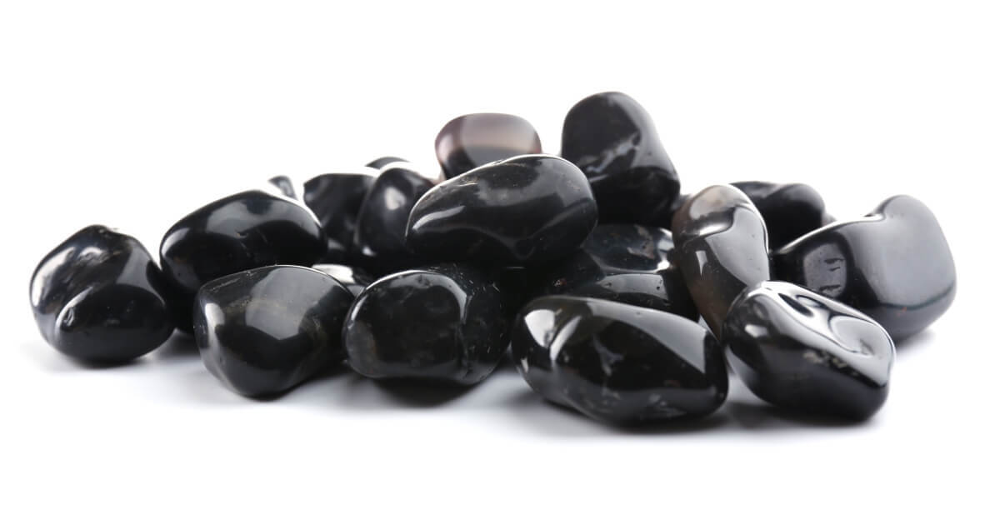
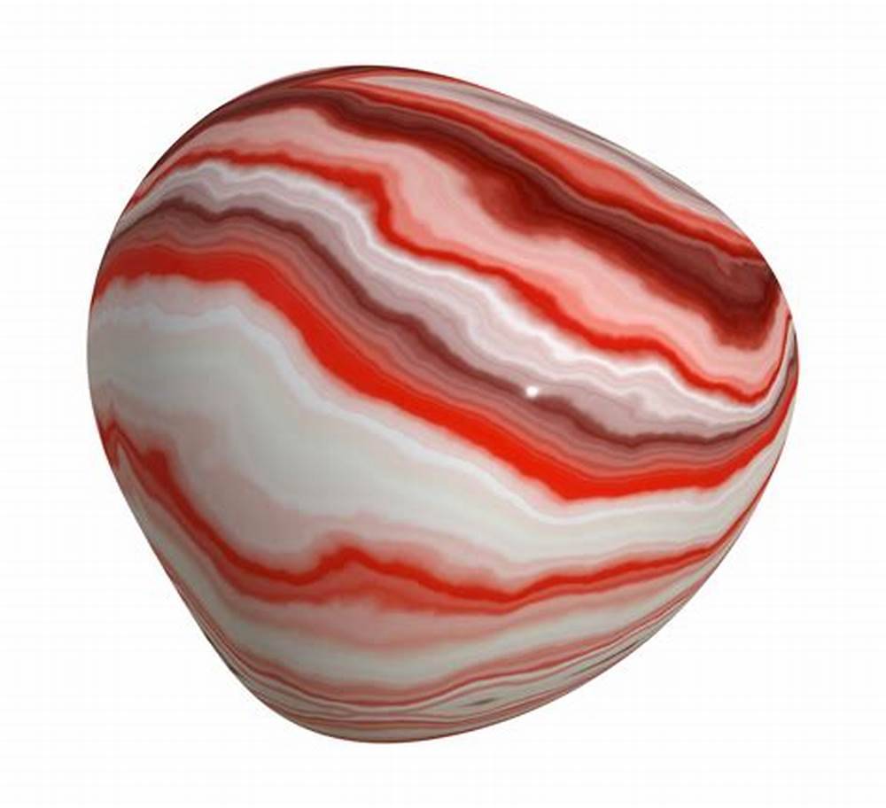

Onyx: Tips for Collecting and Identifying Authentic Onyx
Onyx is a stunning and revered gemstone that has been prized for centuries. Its deep, rich colors and exquisite banding make it a sought-after material for jewelry and ornamental items. However, the market for onyx is flooded with imitations and fake specimens, making it crucial for collectors and buyers to arm themselves with knowledge on how to identify authentic onyx. In this comprehensive guide, we will explore everything you need to know about collecting and identifying genuine onyx, including its properties, sources, identification tips, and ethical considerations.
Definition and Composition
Onyx is a captivating variety of chalcedony, a cryptocrystalline form of quartz. Unlike its more transparent counterparts like amethyst or citrine, onyx's unique charm stems from its opaque nature and mesmerizing parallel bands. These bands often feature contrasting colors, the most classic being black and white. However, onyx displays a remarkable spectrum of hues, including reds, browns, greens, and even the rare and ethereal blue.
These diverse colorations result from the presence of impurities during onyx's formation. Iron oxides contribute to the captivating reds and browns, while traces of manganese can create the enchanting blues and greens. The specific mineral composition and the conditions under which onyx forms contribute to the endless variations in patterns and shades, making each piece a unique work of natural art.
Historical Significance
The history of onyx dates back to ancient civilizations, it boasts a storied history intertwined with numerous cultures where it was highly prized and used for carvings, amulets, and jewelry.
- Ancient Egypt: Egyptians revered onyx for its protective properties and frequently incorporated it into amulets and talismans. They also fashioned intricate carvings and inlays from onyx, adorning tombs, temples, and other sacred spaces.
- Mesopotamia: In ancient Mesopotamia, the onyx was prized for its durability and beauty. It was utilized in the creation of cylinder seals, which were used to mark documents and possessions.
- Ancient Rome: The Romans valued onyx for its ability to create striking cameos and intaglios. Onyx's contrasting bands lent themselves well to detailed carvings, often depicting mythological figures or important historical events.
- Victorian Era: Onyx experienced a resurgence in popularity during the Victorian era. It was incorporated into mourning jewelry, symbolizing grief and remembrance. Intricately carved onyx brooches and pendants were cherished keepsakes.
Physical Properties of Onyx

Appearance
The most characteristic feature of onyx is its banding, which sets it apart from other varieties of chalcedony. The bands can be straight, wavy, or concentric, and they contribute to the gemstone's unique appeal. Onyx's defining characteristic is its parallel banding. These bands can be thin or thick, straight or slightly wavy. However, some onyx varieties showcase more subtle or blended bands. The most sought-after patterns feature sharp, well-defined bands with high contrast between the colors. Onyx commonly occurs in black and white, but it can also exhibit brown, red, and blue bands, creating a diverse palette of colors.
Hardness
With a Mohs hardness rating of 6.5 to 7, onyx is a relatively hard and durable gemstone. This hardness allows it to resist scratches and abrasion, making it suitable for everyday wear in jewelry.
Durability
Onyx's durability makes it a versatile material for various applications. It can withstand the rigors of daily wear in jewelry and maintain its luster and polish over time. However, like any gemstone, it's not invincible. It can be susceptible to chipping or cracking if subjected to sharp impacts or extreme temperature changes.
Common Uses of Onyx
Onyx's unique beauty and durability have made it a sought-after material for a wide range of applications throughout history and in modern times:
- Jewelry: Onyx beads, cabochons, and carvings are transformed into stunning necklaces, earrings, bracelets, rings, and pendants. Black onyx is particularly popular for its elegant and timeless appeal.
- Decorative Objects: Onyx's natural patterns make it a perfect canvas for intricate carvings and sculptures. It is often fashioned into vases, bowls, figurines, chess sets, and other decorative items that grace homes and galleries.
- Architectural Accents: In architecture and interior design, onyx slabs and tiles are used to create stunning visual effects. They are often used for wall cladding, flooring, countertops, and even backlighting to showcase the stone's translucency and intricate patterns.
- Religious and Spiritual Objects: Onyx maintains its historical significance in religious and spiritual practices. It is used to create prayer beads, rosaries, and other objects used in meditation and prayer.
- Functional Objects: Due to its durability, onyx has also been used to create practical items such as inkwells, knife handles, and even mortars and pestles.
Where to Find and Collect Onyx Globally

Onyx deposits are scattered across the globe, with some regions renowned for their unique onyx varieties:
Major Onyx Sources
- Argentina: Argentina is a significant source of black and white onyx, prized for its classic and elegant patterns.
- Brazil: Brazil is renowned for its vibrant green onyx, a variety that showcases a striking contrast between lush green bands and white or cream-colored accents.
- India: India is a major supplier of black onyx, particularly for use in jewelry and decorative objects. The country is also home to deposits of multi-colored onyx, featuring a captivating blend of hues.
- Madagascar: Madagascar produces a diverse array of onyx varieties, including black, white, green, and even rare shades of pink and purple. The island nation's geological diversity contributes to the wide range of onyx colors and patterns found there.
- Mexico: Mexico is famous for its banded green onyx, known for its vibrant green bands and intricate patterns. Onyx from Mexico is often used in architectural applications, creating stunning visual displays in homes and commercial spaces.
- Pakistan: Pakistan boasts abundant deposits of black onyx, as well as multi-colored varieties with captivating combinations of reds, yellows, and browns.
Collectors can explore these regions to gather specimens of onyx, either in the form of rough stones or finished products available in local markets and gem shows.
Collecting Onyx in the United States
In the United States, some of the major sites for mining onyx include:
- Arizona: Arizona's Black Hills Rockhound Area is a popular destination for onyx enthusiasts. The Date Creek Mountains are also known for their onyx deposits.
- California: The Chocolate Mountains in Southern California offer opportunities for onyx exploration. The Palo Verde Mountains are another potential location for onyx finds.
- Oregon: The Succor Creek area and the Owyhee Canyonlands are recognized onyx-producing regions in Oregon.
RELATED TOPIC: Everything About Jade: The Ultimate Guide to Understanding Jade
Ethical and Sustainable Sourcing
As awareness of environmental and social issues grows, responsible sourcing of gemstones has become increasingly important. When purchasing onyx, consider these ethical and sustainable practices:
- Fair Trade: Support vendors who adhere to fair trade principles. This ensures that miners and artisans receive fair wages and work in safe conditions. Look for certifications from organizations like the Fairtrade Foundation or the World Fair Trade Organization.
- Environmental Impact: Choose onyx from suppliers committed to minimizing their environmental footprint. This might involve using sustainable mining practices, reducing water consumption, and minimizing waste. Look for certifications like the Responsible Jewellery Council (RJC) certification, which addresses environmental, social, and ethical issues in the jewelry supply chain.
- Traceability: Inquire about the origin of the onyx. Reputable sellers should be able to provide information about where the stone was mined and how it was processed. This transparency helps ensure that the onyx was sourced responsibly.
- Support Local Artisans: Consider purchasing onyx jewelry or decorative objects directly from artisans in the regions where the stone is mined. This supports local economies and helps preserve traditional craftsmanship.
Identifying Authentic Onyx

While Onyx's beauty is undeniable, the market is unfortunately flooded with imitations. To ensure you're acquiring genuine onyx, employ a multi-faceted approach to identification:
- Visual Inspection:
- Banding: Genuine onyx exhibits consistent, parallel bands. These bands should be sharp and well-defined, not blurry or irregular. Examine the stone under good lighting, rotating it to observe the banding from different angles.
- Color: While black and white is the most classic combination, onyx can occur in various colors. However, be cautious of overly vibrant or unnatural hues, as these could indicate artificial dyeing. Genuine onyx colors tend to be more subdued and natural.
- Translucency: Onyx is typically opaque, meaning light does not pass through it easily. However, some thinner pieces or those with lighter colors might exhibit slight translucency when held up to a light source.
- Inclusions: Natural onyx may contain small inclusions or imperfections. These can be tiny mineral crystals, air bubbles, or other natural features. While excessive inclusions can detract from the stone's overall beauty, their presence confirms the onyx's natural origin.
- Feel and Weight:
- Cool to the Touch: Authentic onyx will feel cool to the touch, much like other natural stones. This is due to its thermal conductivity, which allows it to dissipate heat quickly. Imitations made of plastic or resin may feel warmer.
- Density: Onyx has a moderate density, meaning it feels relatively heavy for its size. It should feel noticeably heavier than plastic or glass imitations of similar dimensions. If a piece feels unusually light, it's a red flag that it might not be genuine onyx.
- Scratch Test:
- Glass Test: Onyx is harder than glass, with a rating of 6.5 to 7 on the Mohs hardness scale. This means it can scratch glass. However, be cautious when performing this test, as you don't want to damage the glass. Choose an inconspicuous area of the glass and gently rub the onyx against it. If it leaves a scratch, it's a good indication that the onyx is genuine.
- Professional Verification:
- Gemologist: For valuable specimens or when in doubt, the most reliable way to authenticate onyx is to consult a qualified gemologist. They possess the expertise and specialized tools to conduct thorough examinations, including microscopic analysis and refractive index testing, to confirm the stone's authenticity and quality.
Onyx Varieties
Onyx encompasses a captivating array of varieties, each distinguished by its unique color palette and banding patterns. While black and white onyx is the most well-known variety, onyx occurs in a range of colors and patterns. Some popular varieties include:
-
Black Onyx

The most iconic and sought-after variety, black onyx is prized for its deep, velvety black color. Its solid black appearance makes it a versatile choice for jewelry, carvings, and decorative objects. It's believed to offer protection, grounding, and strength.
-
Sardonyx
Characterized by its reddish-brown and white bands, sardonyx is a striking variety with a rich history. It was often used in ancient cameos and intaglios. Sardonyx is associated with courage, happiness, and good fortune.
-
Carnelian Onyx

Similar to sardonyx, carnelian onyx features bands of orange or red alongside white. The warm tones of carnelian are thought to enhance creativity, vitality, and passion.
-
Green Onyx

Less common but equally captivating, green onyx showcases varying shades of green alongside white or cream-colored bands. It is sometimes referred to as "banded agate" due to its resemblance to agate. Green onyx is associated with growth, harmony, and prosperity.
-
Blue Onyx

A true rarity, blue onyx is highly prized for its mesmerizing blue hues, which can range from pale sky blue to deeper shades. Its unique coloration makes it a sought-after gemstone for collectors and jewelry enthusiasts.
RELATED TOPIC: Collecting Amethyst: Exploring Its Meaning, Uses and Properties
The Value of Onyx: Price Considerations and Where to Buy
Onyx holds both inherent and market value. Its beauty, durability, and historical significance make it a desirable gemstone for collectors and consumers alike. However, the value of onyx can vary significantly depending on several factors:
Factors Influencing Onyx Value:
- Quality: The quality of the onyx greatly impacts its value. Factors like the intensity and evenness of the banding, the clarity of the stone, and the presence (or absence) of flaws or inclusions all play a role.
- Color: While black onyx is the most common, rarer colors like green or blue onyx can command higher prices due to their limited availability.
- Size: Larger pieces of onyx are generally more valuable than smaller ones, especially if the banding patterns are consistent and well-defined throughout the stone.
- Cut and Craftsmanship: The cut and craftsmanship of onyx jewelry or decorative objects can greatly affect the price. Intricate carvings, unique designs, and high-quality settings can all increase the value of a piece.
- Origin: Onyx from certain regions may be considered more valuable due to their reputation for producing high-quality specimens. For example, Mexican green onyx is highly prized for its vibrant color and intricate patterns.
Where to Buy Onyx:
- Reputable Jewelers: Established jewelers with a good reputation are a reliable source for purchasing onyx jewelry. They often carry a selection of authentic onyx pieces and can provide information about the stone's origin and quality.
- Gem Shows: Gem shows and mineral exhibitions are excellent places to find a wide variety of onyx specimens, from rough stones to finished jewelry and decorative objects. These events often attract reputable dealers and collectors who can offer valuable insights and expertise.
- Online Marketplaces: Online marketplaces like shop.rockhounding.org, Etsy, eBay, and Amazon can offer a wider selection of onyx than brick-and-mortar stores. However, it's crucial to purchase from reputable sellers with positive reviews and a history of selling authentic gemstones.
- Direct from Artisans: If you're looking for unique and handcrafted onyx pieces, consider purchasing directly from artisans in regions known for onyx production. This supports local communities and allows you to connect with the people who create these beautiful objects.
Price Considerations:
Onyx prices can vary widely, from a few dollars for small tumbled stones to hundreds or even thousands of dollars for high-quality jewelry or large, intricately carved decorative pieces. When considering a purchase, do your research and compare prices from different sources to get a sense of fair market value. Be wary of prices that seem too good to be true, as they may indicate that the onyx is fake or of inferior quality.
Avoiding Scams:
- Be Cautious of Overly Vibrant Colors: Onyx typically has more subdued colors. Overly bright or saturated hues may indicate that the stone has been artificially dyed.
- Check for Inconsistent Banding: Genuine onyx has consistent, parallel banding. Inconsistent or blurry banding could indicate a fake.
- Feel the Weight: Onyx should feel relatively heavy for its size. If a piece feels unusually light, it might be a plastic or resin imitation.
- Look for Certifications: Reputable sellers will often provide certifications from gemological laboratories, such as the Gemological Institute of America (GIA), verifying the authenticity and quality of the onyx.
Tips for Buying Onyx:
- Ask Questions: Don't hesitate to ask the seller about the onyx's origin, any treatments it has undergone, and any certifications it may have.
- Examine the Stone Carefully: Look for the characteristics of genuine onyx, such as consistent banding, natural colors, and appropriate weight and feel.
- Compare Prices: Shop around and compare prices from different sources to get a sense of the fair market value of onyx.
- Trust Your Instincts: If a deal seems too good to be true or the seller is evasive about providing information, it's best to move on.
Common Imitations and How to Spot Them
The allure of onyx has unfortunately spawned a market of imitations designed to deceive unsuspecting buyers. Here's how to distinguish authentic onyx from its impostors:
- Dyed Agate:Agate, a similar banded chalcedony, is often dyed to resemble onyx. Look for inconsistencies in the banding, such as abrupt color changes or unnatural color concentrations. Dyed agate may also exhibit a slightly chalky texture compared to the smoother surface of genuine onyx.
- Glass Onyx:Glass can be molded and colored to mimic onyx, but it is significantly lighter and less dense. Tap the suspected glass onyx gently against a hard surface; it will produce a duller sound than genuine onyx, which has a more resonant ring.
- Resin Onyx:Resin-treated materials are another common imitation of onyx. Resin is used to create artificial banding and patterns that mimic the appearance of natural onyx. They may feel warmer to the touch and lack the natural coolness of real onyx. Look for inconsistencies in the bands or overly glossy surfaces, as these may indicate the presence of resin treatments. A simple scratch test (using a concealed area) with a sharp object will reveal the resin's softer nature.
- Composite Onyx:Also known as "reconstituted onyx" or "assembled onyx," this material is created by bonding thin layers of onyx to a base material, often a resin or plastic. Examine the edges of the piece; composite onyx may reveal layering or inconsistencies in the banding. Additionally, it may feel lighter and less dense than solid onyx.
Onyx: Tips for Collecting and Identifying Authentic Onyx
While mining for onyx, the following tips can be really helpful:
- Research: Before venturing out, thoroughly research potential onyx locations. Consult geological maps, rockhounding guides, and online resources to identify promising areas.
- Observe Local Regulations: Respect the laws and regulations governing rock and mineral collecting in your chosen area. Some sites may be off-limits due to environmental conservation or private property restrictions.
- Permissions: Always obtain necessary permits or permissions before collecting on private or public lands. Respect property boundaries and adhere to any regulations regarding collecting.
- Safety First: Prioritize safety by wearing appropriate gear. Gloves protect your hands, sturdy footwear prevents injuries on uneven terrain, and eye protection shields you from debris and dust.
- Tools of the Trade: A rock hammer, chisel, pry bar, and a sturdy backpack or bag are essential tools for collecting onyx. A magnifying glass can help you examine specimens more closely in the field.
- Leave No Trace: Practice responsible collecting by minimizing your impact on the environment. Fill in any holes you dig and pack out any trash or debris you generate. Leave the area as you found it.
- Observe and Learn: Pay attention to the geological formations and rock types in the area. This can help you understand the conditions under which onyx forms and potentially lead you to more fruitful discoveries.
- Network with Fellow Rockhounds: Connect with other rockhounds and collectors in your area. They can be valuable sources of information, tips, and camaraderie.
Also, the following tips can be very helpful in identifying onyx:
- Research: Before purchasing or collecting onyx, research its various types and their characteristics. This will help you develop a discerning eye for authentic specimens.
- Reputable Sources: Purchase onyx from reputable dealers or collectors who can provide information about the stone's origin and authenticity.
- Ask Questions: Don't hesitate to ask sellers about the onyx's source, treatments (if any), and any certifications it may have.
- Trust Your Instincts: If a deal seems too good to be true, it probably is. Be wary of significantly lower prices than what you would expect for genuine onyx.
- Seek Professional Help: If you're unsure about a piece, consult a qualified gemologist for expert assessment and verification.
Additional Resources
Books and Articles
- "Gemstones of the World" by Walter Schumann: This comprehensive guide provides insights into the characteristics and identification of onyx and other gemstones.
- "The Jeweler's Directory of Gemstones" by Judith Crowe: Explore in-depth information on onyx and its uses in jewelry design and creation.
Organizations and Associations
- Gemological Institute of America (GIA): GIA offers education and resources on gemstones and is a trusted source for gemological information and authentication.
- The International Gem Society (IGS): IGS provides valuable resources and community forums for gem enthusiasts, including articles and discussions on onyx and other gemstones.
RELATED TOPIC: Agates Rock: How to Find, Identify, and Collect Agates in the US
Onyx: Frequently Asked Questions (FAQs)
- What is the average price of authentic onyx?
The price of onyx varies based on factors such as quality, size, and color. Onyx is generally valued for its unique banding and can range from affordable to high-end, depending on these attributes. - Does onyx require special care and cleaning?
Onyx is relatively durable but should be handled with care to avoid chipping and scratches. Clean onyx jewelry and ornaments with mild soap and a soft cloth, avoiding exposure to harsh chemicals and abrasives. - What is the average price of onyx?
The price of onyx varies depending on quality, size, and craftsmanship. Rough onyx can be relatively inexpensive, while high-quality jewelry pieces or decorative objects can command higher prices. - Can onyx be treated or enhanced?
Some onyx may be treated with dyes or resins to enhance its color or stabilize its structure. Reputable sellers should disclose any treatments the onyx has undergone. - Is onyx suitable for everyday wear?
Yes, onyx is relatively durable and suitable for everyday wear. However, it is still susceptible to chipping or cracking if subjected to sharp impacts or extreme temperature changes.